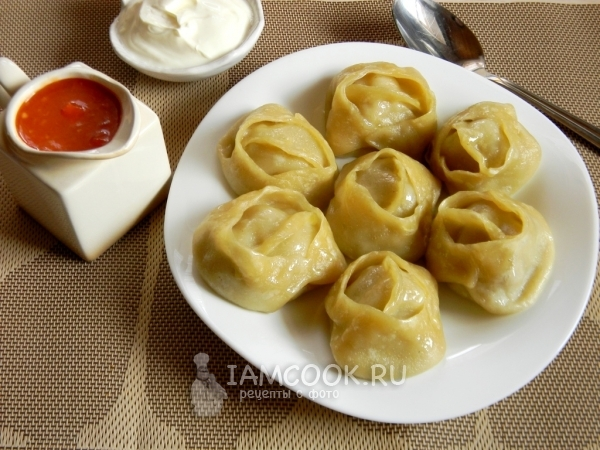
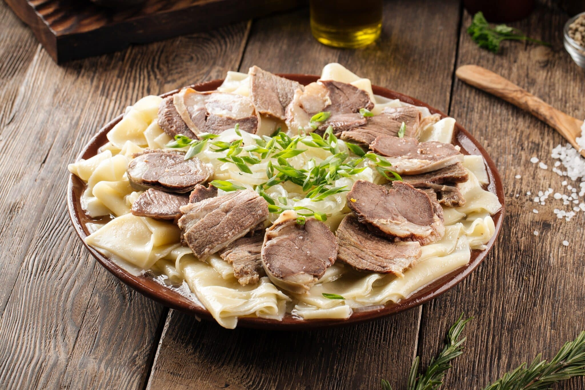
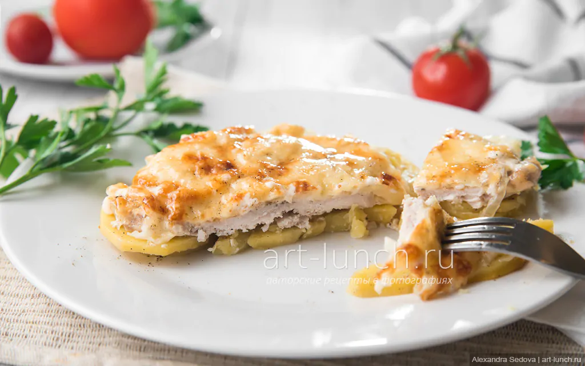

My Favorite Recipes
Manti
Traditional dumplings filled with meat and onions, popular in Central Asia.

Ingredients
- Flour
- Water
- Ground beef or lamb
- Onion
- Salt and pepper
Steps
- Prepare dough using flour and water.
- Mix meat with chopped onion and spices.
- Roll dough and cut into squares.
- Add filling and shape dumplings.
- Steam for 30–40 minutes.
Beshbarmak
A traditional dish with boiled meat served over noodles.

Ingredients
- Beef or lamb
- Flour
- Egg
- Onions
- Salt
Steps
- Boil meat until tender.
- Prepare dough and cut into noodles.
- Cook noodles in broth.
- Slice meat.
- Serve meat over noodles with onions.
Rice with Chicken
A simple and tasty meal combining rice and seasoned chicken.

Ingredients
- Rice
- Chicken
- Carrot
- Onion
- Spices
Steps
- Cook chicken with vegetables.
- Add rice and water.
- Season with spices.
- Simmer until rice is ready.
- Serve hot.
Meat in French Style
Baked meat topped with potatoes, cheese, and mayonnaise.

Ingredients
- Pork or beef
- Potatoes
- Cheese
- Mayonnaise
- Onion
Steps
- Slice meat and potatoes.
- Layer ingredients in a baking dish.
- Add mayonnaise and cheese.
- Bake in oven.
- Serve warm.
Spaghetti Carbonara
Classic Italian pasta with eggs, cheese, and bacon.

Ingredients
- Spaghetti
- Eggs
- Parmesan cheese
- Bacon
- Pepper
Steps
- Cook spaghetti.
- Fry bacon.
- Mix eggs and cheese.
- Combine all ingredients.
- Serve immediately.